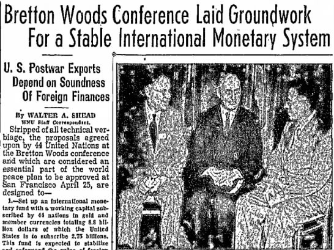

Instituto Politécnico Nacional
Unidad temática 5. Fluctuaciones económicas y políticas de estabilización Sesión 5. Políticas económicas y el comportamiento macroeconómico Crisis económicas de finales del siglo XX y políticas de estabilización
Equipo 1:
Acosta Reza Yareth Esmeralda
Aguirre Limones Arely Esmeralda
Bojorges Caballero Geovany Isaias
Corona García Sandra Abigail
Asesor: Nava Hernández Gerardo Bonifacio
Grupo:2EX14
Relevancia y oportunidad de las medidas anticíclicas
Si uno analiza la economía a largo plazo, se podrá observar que no evoluciona de manera lineal y progresiva en el tiempo, sino que su movimiento transcurre a través de ondas que son determinadas por los ciclos económicos. Para poder entender las políticas económicas anticíclicas, hay que tener un conocimiento sobre qué es el ciclo económico. Básicamente, el ciclo económico consiste en una serie de fases por las que pasa la economía, hasta llegar a la final, en la que comienza de nuevo el ciclo. Los ciclos incluyen las fases de:
- Recuperación
- Expansión
- Auge
- Recesión
- Depresión
No se puede determinar la duración exacta de un ciclo económico ni de cada fase, ya que varía dependiendo de la ocasión.
Estas fases del ciclo económico dan lugar a periodos de expansión y contracción de la actividad económica, dentro de la tendencia alcista que esta tiene a largo plazo. Por lo tanto, una política económica anticíclica, como lo dice en su nombre, tiene como objetivo suavizar o contrarrestar estas oscilaciones de cada fase del ciclo económico. Es decir, consiste en un conjunto de acciones gubernamentales para impedir, superar o minimizar las variaciones causadas por los efectos del ciclo económico, con el fin de mantener cierta estabilidad.
Las distintas escuelas económicas coinciden en que el papel del Estado y la política económica de un gobierno pueden influir en la duración de las fases del ciclo económico. Sus principales herramientas para dichas intervenciones son las políticas monetarias y fiscales. Como ya sabemos, la política monetaria es una herramienta del banco central que se centra en tomar medidas necesarias para lograr la estabilidad de precios. Esto se efectúa, principalmente, a través de la fluctuación de las tasas de interés; por ejemplo, disminuyendo las tasas para reactivar a la economía cuando se contrae.
Por otro lado, las políticas fiscales están a cargo de los gobiernos y se centran en influir en la economía a través de los impuestos y el gasto público. Por ejemplo, una política fiscal anticíclica opta por aumentar los impuestos durante periodos de expansión económica para crear un superávit y lograr aumentar el gasto público en épocas de recesión o caídas económicas.
El modelo keynesiano
El Estado es el rector de la economía y, a través de los instrumentos de política económica, suaviza la tendencia expansionista de la producción o estimula las actividades económicas en las fases de recesión. El consumo y el gasto de inversión de las empresas se consideran variables endógenas, pero el consumo del gobierno, la estructura de los impuestos y las transferencias públicas son principalmente exógenos, en el sentido de que pueden controlarse por los diseñadores de la política económica y no por los consumidores o las unidades productivas. La política de estabilización económica se concibe como la actividad discrecional de los gestores de la política respecto de los cambios en el gasto público, los impuestos y los gastos de transferencia. Una combinación de la política fiscal y monetaria desplazará en las direcciones deseadas para eliminar las brechas recesivas e inflacionarias de la economía.
La eliminación de las brechas recesivas mediante la política fiscal se logra precisamente a través de cierta combinación de un aumento de los gastos del gobierno, un incremento de los gastos de transferencias públicas y un descenso de los impuestos. La eliminación de las brechas inflacionarias a través de la política fiscal se logra con el nivel de gasto agregado en sentido descendente con el propósito de lograr un equilibrio de pleno empleo y de precios relativamente estables. La política fiscal necesita una combinación de gasto público y transferencias más bajas e impuestos más altos. La política fiscal y la política monetaria deben ser utilizadas por el gobierno para promover el pleno empleo, la estabilidad de precios y el crecimiento económico.
Política anticíclica monetarista
Un principio clásico de los monetaristas es que sólo las variaciones en la oferta monetaria provocan cambios en el nivel de precios. Actualmente, los teóricos modernos suponen una relación positiva entre las variaciones en la oferta monetaria y en el ingreso nacional nominal o el PIB real en el corto y el largo plazo. Los cambios en la oferta monetaria provocan variaciones en el nivel de precios o cambios en la producción nacional. En el largo plazo, las variaciones en la oferta monetaria sólo afectan a los precios absolutos y estos, a su vez, afectan el nivel de empleo y la producción en el corto plazo.
La política monetaria actúa en forma indirecta sobre la economía, afecta al gasto a través de la modificación de las tasas de interés, las condiciones del crédito, los tipos de cambio y los precios de los activos. Si la economía está vinculada con el comercio exterior, la política monetaria en las exportaciones netas tiene mayor impacto, en contraposición con el efecto que tiene en la vivienda y en otros sectores, pues serán menos sensibles ante la desregulación financiera. Los monetaristas dudan de que la política fiscal sea efectiva si la oferta monetaria se mantiene constante. Así que es preferible una política monetaria que incremente los agregados monetarios a una tasa igual a la tasa de crecimiento del PIB en la economía como consecuencia de los incrementos en la población y en la productividad.
Una de las instituciones determinantes en este tipo de decisiones son los bancos centrales que, por su independencia política y su rápida toma de decisiones a través de los instrumentos de política monetaria, afectan la estabilización de la economía que pudiera darse por las fluctuaciones económicas. En el caso de la economía mexicana, es función del Banco de México atenuar los incrementos del nivel de precios y cuidar la capacidad adquisitiva de la moneda a través de los instrumentos de la política monetaria e incidir en la producción, en el empleo o suavizar los ciclos económicos. Los mecanismos de transmisión de la política monetaria afectan la actividad económica, inciden en el corto plazo sobre la tasa real de interés. Un cambio en la política monetaria modifica la producción en el corto plazo, en especial, el tipo de cambio real que afecta la tasa de interés interna.
Una modificación de la política monetaria más restrictiva impacta las tasas de interés en el corto, mediano y largo plazo e incide en las expectativas de la inflación. Una política monetaria expansiva afecta la cantidad de depósitos que realizan los bancos, modifica su capacidad en la otorgación de créditos a las empresas y a las familias, lo cual se traduce en un aumento de los gastos de inversión y producción de las empresas y el gasto de consumo de bienes por parte de las familias. Este proceso es continuo hasta que el momento en que la oferta monetaria sea igual a la cantidad de dinero.

Propuestas basadas en los enfoques presentados
Cuando los problemas se presentan en una entidad, el empleo del seguro de depósitos constituye una solución eficiente para evitar que se produzca una reacción en cadena que desestabilice al sistema financiero. El seguro puede ser formado con recursos privados o públicos, constituyendo las reservas ex ante o ex post, siendo de adhesión voluntaria u obligatoria, para todos los depósitos o algunos tipos.
Banco Central como Prestamista de Última Instancia:
El papel de prestamista de última instancia requiere que las normas por las que se rige su conducta sean claras para que no exista ambigüedad ante los distintos casos que se presenten. El efecto de esta ambigüedad permite que se rescaten a todos los bancos grandes y sólo aquellos pequeños que realmente cumplen con las condiciones citadas. Esto se debe a la idea conocida como “es demasiado grande para quebrar”.
Regulación Prudencial. Supervisión:
Se efectúan análisis minuciosos de lo que implica cada norma, analizando los objetivos para los cuales fueron creadas, evaluando modos de implementación más efectivos. Una característica que resalta es que las normas deben ser claras y aplicables, impidiendo que las entidades controladas puedan ocultar información y permitiendo que el agente de control pueda desempeñarse con todos los elementos necesarios para dar cumplimiento a las disposiciones del Banco Central.
Colaterales:
El papel que juegan los colaterales o garantías, es otorgarle mayor grado de solvencia a las entidades y reducir el riesgo de su cartera. Los bancos otorgan préstamos para la adquisición de estos activos tomando los mismos como garantías, inflando la demanda de crédito y la tasa de interés. Cuando este proceso se detiene, el valor de los activos disminuye y se agravan los problemas de las entidades y de los deudores.
Participación del Sector Privado:
La propuesta se orienta a limitar este comportamiento y buscar que cada uno actúe individualmente. La propuesta de participación del Sector Privado corresponde al FMI. Advierten que el comportamiento de los inversores es “en manada”, que cuando uno se retira de un mercado, el resto lo sigue.
Referencias
Muro, M. P. (29 de marzo de 2021). MARKETDATA. Obtenido de MARKETDATA: https://marketdata.com.py/educacion/economia-facil/la-politica-anticiclica-y-su-relevancia-en-estos-tiempos-40067/
Rodriguez Arturo, “Crisis financieras y globalización: un analisis de sus factores determinantes”, recuperado de https://www.scielo.org.mx/scielo.php?script=sci_arttext&pid=S0301-70362008000200007 el 05 de marzo de 2023
Ariza, C. M. (2010). MEDIDAS DE PREVENCION DE CRISIS. Mar del Plata .
Estrada, H. R. (s.f.). Efecto dragon: Repercusiones en la política financiera y en el mercado mexicano de valores. CDMX: UAM.